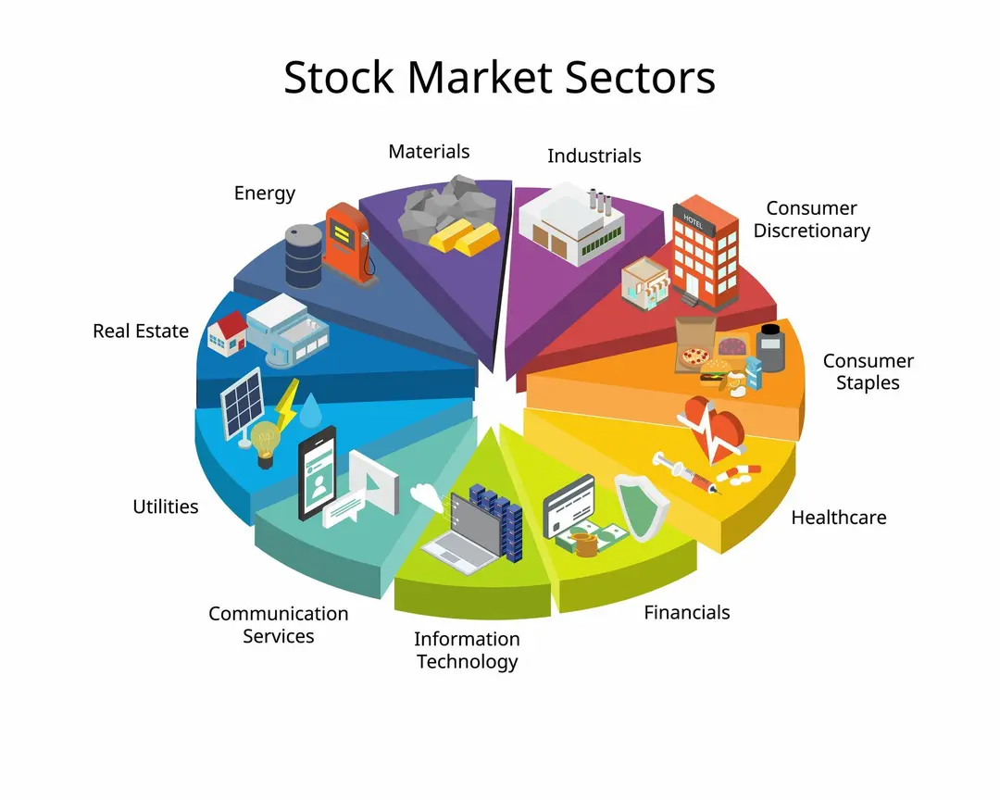

Avant de choisir des actions, il faut comprendre comment le marché est organisé. Imaginez la Bourse comme une immense ville. Dans cette ville, vous ne trouverez pas une boulangerie à côté d'une usine nucléaire. Tout est organisé par "quartiers". Ces quartiers, ce sont les Secteurs.
1. Qu'est-ce qu'un Secteur boursier ? 🌍
Un secteur est un regroupement d'entreprises partageant la même activité économique principale. Cette classification est standardisée au niveau mondial (la norme la plus connue est le GICS). C'est crucial à comprendre car les actions d'un même secteur ont tendance à bouger ensemble par mimétisme. Si une nouvelle tombe sur le prix du pétrole, tout le secteur énergie bougera, peu importe la qualité individuelle des entreprises. C'est la marée qui soulève ou baisse tous les bateaux.
2. Le Tour d'Horizon : Les 11 Grands Secteurs 🔭
Pour être un investisseur complet, vous devez savoir identifier dans quelle catégorie joue votre entreprise, car chaque secteur a ses propres règles du jeu. Voici les 11 piliers de l'économie :

💻 1. La Technologie (Information Technology)
C'est le véritable moteur de l'économie moderne et le secteur favori des investisseurs en quête de croissance. Il regroupe une immense variété d'acteurs, allant des fabricants de semi-conducteurs (les "pelles et pioches" de l'ère numérique) aux éditeurs de logiciels ultra-rentables, en passant par le matériel électronique. C'est un domaine caractérisé par une innovation constante, des marges souvent très élevées et une capacité unique à grandir rapidement (scalabilité), bien qu'il soit souvent plus volatil lorsque les taux d'intérêt augmentent.
Exemples : Microsoft, Apple, Nvidia, Accenture.
💊 2. La Santé (Health Care)
Ce secteur est unique car il réussit le tour de force d'être à la fois défensif et de croissance. Il englobe les géants pharmaceutiques qui vendent des médicaments vitaux, les biotechs à la pointe de la recherche génétique, mais aussi les fabricants d'équipements médicaux de haute précision. Porté par une tendance lourde inarrêtable — le vieillissement de la population mondiale — ce secteur offre une résilience exceptionnelle, car peu importe l'état de l'économie ou l'inflation, les patients ne renoncent jamais à se soigner.
Exemples : Novo Nordisk, Eli Lilly, Sanofi, Stryker.
🏦 3. La Finance (Financials)
Considéré comme le système sanguin de l'économie, ce secteur est vaste et comprend les banques de détail, les banques d'investissement, les compagnies d'assurance et les gestionnaires d'actifs. Ces entreprises gagnent de l'argent en gérant les flux financiers, en prêtant des capitaux ou en assurant des risques. C'est un secteur très cyclique, étroitement lié à la santé économique globale et extrêmement sensible aux décisions des banques centrales, ce qui rend ses bilans comptables parfois opaques pour le particulier.
Exemples : JPMorgan, BNP Paribas, AXA, BlackRock.
👜 4. La Consommation Discrétionnaire (Consumer Discretionary)
Ce secteur regroupe les entreprises vendant des biens et services "non essentiels", ou de plaisir. On y trouve un mélange hétéroclite allant de l'industrie automobile au luxe, en passant par l'hôtellerie, la restauration et le commerce de détail (e-commerce inclus). C'est le secteur cyclique par excellence : ses performances explosent en période de prospérité quand les ménages ont du pouvoir d'achat, mais ses revenus sont souvent les premiers à être coupés dès que la récession pointe le bout de son nez.
Exemples : LVMH, Hermès, Tesla, Amazon, McDonald's.
🛒 5. La Consommation de Base (Consumer Staples)
À l'opposé du précédent, ce secteur rassemble les entreprises produisant les biens dont personne ne peut se passer au quotidien. Il s'agit des fabricants de nourriture, de boissons, de tabac, de produits d'hygiène ou ménagers. Ces sociétés sont considérées comme des "valeurs refuges" : elles offrent peu de croissance explosive, mais garantissent une stabilité des revenus et des dividendes très réguliers, car les consommateurs continueront d'acheter du dentifrice et des pâtes même si la bourse s'effondre.
Exemples : Coca-Cola, Procter & Gamble, Nestlé, L'Oréal.
🏭 6. L'Industrie (Industrials)
C'est le secteur des "bâtisseurs" et des "transporteurs", regroupant la construction, l'aérospatial, la défense, le transport de marchandises (ferroviaire, maritime) et la fabrication de machines-outils complexes. Ces entreprises sont souvent très capitalistiques (elles nécessitent beaucoup d'usines et de matériel lourd) et fonctionnent comme un baromètre de l'économie réelle. Elles profitent massivement des plans de relance gouvernementaux, mais souffrent rapidement en cas de ralentissement de la production mondiale.
Exemples : Schneider Electric, Airbus, Vinci, Union Pacific.
📡 7. Services de Communication (Communication Services)
Anciennement limité aux opérateurs téléphoniques classiques, ce secteur a muté pour devenir celui de l'attention et du divertissement numérique. Il inclut désormais les géants des réseaux sociaux, les plateformes de streaming, les médias traditionnels, les jeux vidéo et les fournisseurs d'accès internet. C'est un secteur hybride : les abonnements téléphoniques apportent une rente stable (côté défensif), tandis que la publicité en ligne et les nouveaux médias offrent un potentiel de croissance plus dynamique.
Exemples : Alphabet (Google), Meta (Facebook), Orange, Netflix.
⚡ 8. L'Énergie (Energy)
Ce secteur concerne tout ce qui touche à l'exploration, la production, le transport et le raffinage des combustibles (pétrole, gaz, charbon) ainsi que, de plus en plus, les énergies renouvelables. La particularité majeure de ces entreprises est que leur rentabilité ne dépend pas seulement de leur talent de gestion, mais surtout du cours mondial des matières premières qu'elles ne contrôlent pas. C'est historiquement un secteur généreux en dividendes, mais soumis à des cycles d'expansion et de récession très violents.
Exemples : TotalEnergies, Exxon Mobil, Chevron.
🧱 9. Les Matériaux (Materials)
Situé tout en amont de la chaîne de production, ce secteur fournit les "ingrédients" de base nécessaires à toute l'industrie mondiale. On y trouve les géants de la chimie, les producteurs de gaz industriels, les compagnies minières (or, cuivre, lithium) ou les fabricants d'emballages et de papier. Comme l'industrie, c'est un secteur purement cyclique : si la demande mondiale pour la construction ou la technologie ralentit, le prix de ces matériaux chute, impactant directement les bénéfices.
Exemples : Air Liquide, Rio Tinto, Linde.
💡 10. Les Services aux Collectivités (Utilities)
Ce sont les entreprises qui gèrent les infrastructures vitales "invisibles" comme les réseaux d'eau, d'électricité, de gaz ou de traitement des déchets. Souvent en situation de monopole naturel et très régulées par l'État, ces sociétés ont des revenus ultra-prévisibles (vous payez vos factures tous les mois). Les investisseurs les utilisent souvent comme des alternatives aux obligations : on n'attend pas de croissance folle de leur part, mais un rendement de dividende élevé et sécurisé.
Exemples : Veolia, Engie, NextEra Energy.
🏠 11. L'Immobilier (Real Estate)
Ce secteur permet d'investir dans la pierre-papier via des sociétés foncières cotées (appelées REITs ou SIIC). Ces entreprises possèdent, gèrent et louent des parcs immobiliers diversifiés : bureaux, centres commerciaux, entrepôts logistiques, data centers ou tours résidentielles. Elles ont l'obligation légale de reverser la majorité de leurs loyers sous forme de dividendes aux actionnaires. C'est un secteur de rendement, mais qui souffre mécaniquement lorsque les taux d'intérêt augmentent.
Exemples : Unibail-Rodamco-Westfield, Realty Income.
3. Attention aux étiquettes trompeuses ! 🏷️
Il est crucial d'ajouter un bémol majeur à cette liste : la carte n'est pas le territoire.
Ce système de classification est utile pour les statisticiens, mais il est souvent imparfait pour l'investisseur. L'économie moderne est fluide et les géants d'aujourd'hui sont des "pieuvres" qui touchent à tout. Les forcer à rentrer dans une seule case est souvent réducteur, voire totalement trompeur.
L'effet "Caméléon" 🦎
De nombreuses entreprises "Quality" sont à cheval sur plusieurs secteurs :
- Alphabet (Google) : Officiellement classé dans les "Services de Communication". Pourtant, c'est avant tout un leader mondial de la Technologie (IA, Cloud) et un acteur de la Finance (Google Pay).
- Amazon : Classé dans la "Consommation Discrétionnaire". Pourtant, la majorité de ses profits provient d'AWS, qui est purement de la Technologie.
- Visa & Mastercard : Classés dans la "Finance", mais ce sont avant tout des réseaux technologiques de paiement (Fintech).
Le conseil : Ne vous arrêtez jamais à l'étiquette sectorielle affichée par votre courtier. Regardez toujours comment l'entreprise gagne réellement son argent. Une entreprise peut être classée "Conso" sur le papier mais se comporter comme une "Tech" en bourse.
4. La Réalité du terrain : Pourquoi tous les secteurs ne se valent pas ! 🛑
C'est ici que nous allons nous séparer de la théorie académique pour entrer dans la pratique du Stock Picking gagnant.
Si vous écoutez un banquier ou un conseiller financier classique, il vous montrera un joli graphique en forme de beignet ("Donut") et vous dira : "Monsieur, pour limiter les risques, il faut être diversifié. Mettez 8% dans l'automobile, 8% dans les banques, 8% dans la tech..."
C'est, à mes yeux, une erreur fondamentale pour celui qui veut battre le marché.
La vérité brute : Certains secteurs sont économiquement supérieurs à d'autres. C'est comme au Monopoly : il vaut mieux posséder la Rue de la Paix que la Rue de Courcelles. Certains business models sont des autoroutes vers la richesse, d'autres sont des chemins de croix.
⛔ Les Secteurs "Difficiles" (Capital Intensive)
Ce sont des secteurs qui exigent des investissements (CAPEX) colossaux juste pour survivre.
- L'Automobile : C'est une guerre des prix permanente. Les marges nettes dépassent rarement 5% ou 6%. Si vous n'investissez pas des milliards dans l'électrique, vous mourrez. C'est un business ingrat.
- L'Aviation : Les compagnies aériennes font faillite régulièrement. Elles ne contrôlent ni le prix de leur carburant, ni le prix de leurs avions, ni les taxes d'aéroport. C'est un gouffre à cash.
- Les Banques (Traditionnelles) : Leurs bilans sont des "boîtes noires" impossibles à analyser pour un particulier. Elles sont ultra-régulées et dépendantes des taux directeurs qu'elles ne contrôlent pas.
💎 Les Secteurs "Quality" (Asset Light)
À l'inverse, nous allons concentrer notre portefeuille là où l'argent coule à flots avec moins d'efforts.
- Le Luxe : LVMH ou Hermès ont ce qu'on appelle le Pricing Power. Ils peuvent augmenter leurs prix chaque année sans perdre de clients. C'est l'anti-crise.
- La Technologie & Logiciels (SaaS) : Une fois le logiciel créé, chaque nouveau client est du pur profit. La scalabilité est infinie. C'est ici que se créent les "Multibaggers".
- La Santé : La population mondiale vieillit. On ne sacrifie jamais sa santé, même en récession. C'est un secteur qui combine sécurité défensive et croissance.
- Les Services Financiers de Niche : Pas les banques, mais les réseaux de paiement (Visa/Mastercard) ou les agences de notation (S&P Global). Ils prennent une commission sur chaque transaction mondiale sans prendre de risque.
5. Le Mythe de la Diversification Sectorielle 🧩
On vous répète qu'il faut acheter un peu de tout pour être "en sécurité". Mais posez-vous la question :
Est-ce qu'acheter une action LVMH, c'est mettre tous ses œufs dans le même panier ? Non.
Une entreprise "Quality" est déjà diversifiée par nature :
- Géographiquement : Elle vend en Chine, aux USA, en Europe et en Amérique du Sud. Si l'Europe va mal, les USA compensent.
- Par Segments : LVMH vend du Champagne, des Montres, de la Mode, des Parfums et de l'Hôtellerie, on entend souvent dire que c'est un ETF luxe à lui tout seul. Microsoft vend du Cloud, des jeux vidéo (Xbox), des logiciels (Office) et de la pub (LinkedIn).
La citation à retenir 💬
"La diversification est une protection contre l'ignorance. Elle a peu de sens pour ceux qui savent ce qu'ils font."
— Warren Buffett
Ne faites pas de la "Diworsification" :
Ce terme inventé par Peter Lynch désigne le fait de détériorer (worse) son portefeuille en voulant trop le diversifier.
Ne vous forcez jamais à acheter une action médiocre juste pour "remplir une case" Excel (ex: "Il me faut absolument de l'énergie").
Si vous trouvez 5 entreprises incroyables dans la Technologie et aucune dans l'Industrie, alors construisez un portefeuille 100% Tech. C'est peut-être plus volatil à court terme, mais c'est bien moins risqué à long terme que d'acheter des mauvaises entreprises pour faire plaisir aux statistiques.
Nous achetons de la Qualité, pas des étiquettes de secteurs.
5. Nuance importante : L'esprit ouvert, mais critique 🧐
Attention, ne soyez pas sectaires ! Dire que certains secteurs sont "difficiles" ne signifie pas qu'ils sont interdits ou qu'il faut les exclure aveuglément.
Tout les secteurs en bourse se doivent d'être analysés. Il existe peut-être une entreprise exceptionnelle ("l'Exception") cachée au sein d'un secteur difficile. Par exemple, Ferrari est techniquement dans l'automobile, mais ses marges sont celles du luxe.
Le message clé est celui-ci : Arrêtez de regarder votre portefeuille à travers le prisme de la "répartition sectorielle". Ne cherchez pas à équilibrer votre camembert. Cherchez l'excellence, peu importe où elle se trouve. Si elle se trouve uniquement dans 2 secteurs, alors n'investissez que dans ces 2 secteurs.
🔑 Ce qu'il faut retenir
Ne soyez pas esclave des secteurs.
🔹 Soyez sélectifs : Concentrez votre capital sur les secteurs "Rois" (Luxe, Tech, Santé, Services) qui offrent les meilleures marges.
🔹 Oubliez la symétrie : Un portefeuille avec 3 secteurs excellents battra toujours un portefeuille avec 11 secteurs moyens.
🔹 Qualité > Secteur : Une action exceptionnelle dans un secteur moyen vaut mieux qu'une action pourrie dans un bon secteur. Mais une action exceptionnelle dans un secteur exceptionnel, c'est le Graal.